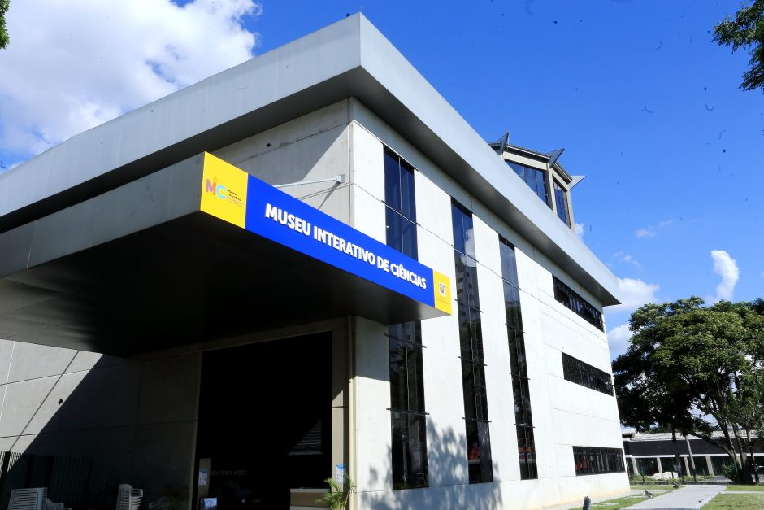
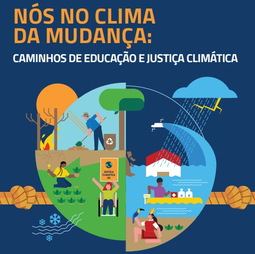
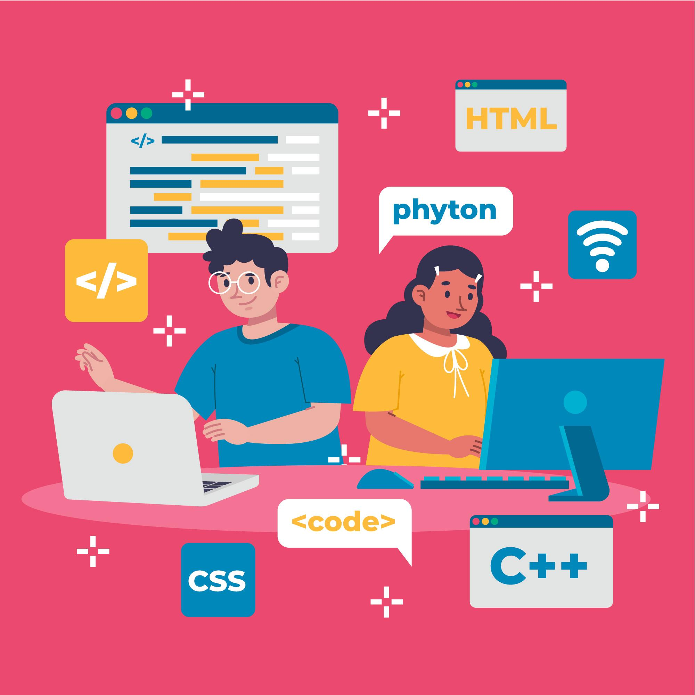
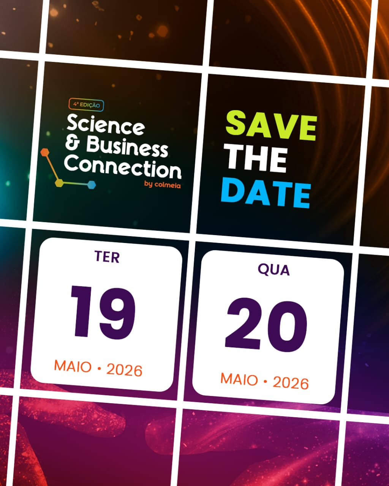
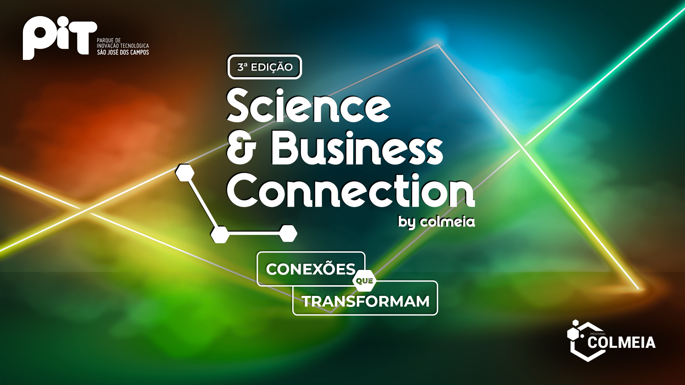
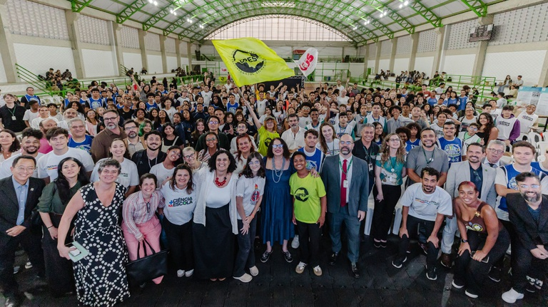

Eventos
Descubra os próximos eventos programados para acontecerem com a participação do +CiênciaSJC.

Encontro de Lançamento de Foguetes (ELFOG)
O O Encontro de Lançamento de Foguetes +CiênciaSJC_Univap (ELFOG) é uma atividade prática e educativa integradora da Mostra de Foguetes do Programa Mais Ciência na Escola (SJC). O evento busca proporcionar um ambiente organizado, seguro e didático para o lançamento de foguetes artesanais feitos de garrafas PET e materiais de papelaria, incentivando a troca de experiências em astronáutica e a aplicação de conhecimentos interdisciplinares em ciências, tecnologia e humanidades.
Informações do Evento
Data: 15 de agosto de 2026
Horário: 08h às 12h30
Local: Faculdade de Engenharias, Arquitetura e Urbanismo (FEAU) da Univap — Campus Urbanova
o Endereço: Av. Shishima Hifumi, 2911, Bloco 10, Urbanova, São José dos Campos - SP
Destaques da Programação
Rodadas de Lançamento: Participação de 26 equipes do Ensino Fundamental e Ensino Médio em raias numeradas e supervisionadas.
Lançamentos Demonstrativos: Apresentações especiais das equipes acadêmicas de foguetaria BRAVO (Univap) e ROCKET (ITA).
Oficina de Fundamentos: Atividades teórico-práticas sobre princípios de astronáutica e física aplicados aos foguetes, realizadas no Auditório da FEAU.
Estande de Exposição:Espaço interativo com projetos desenvolvidos pelas equipes universitárias BRAVO (Univap) e ROCKET (ITA).
Protocolos e Segurança
Para garantir a segurança de todos os participantes, o acesso às raias de lançamento é restrito a três integrantes por equipe, devidamente equipados com EPIs obrigatórios (óculos de proteção, jaleco ou capa de chuva, calça e calçado fechado). Os lançamentos contam com o apoio da equipe organizadora e fiscais de segurança, ambulância e socorrista durante todo o evento.
Equipe Coordenadora e Organizadora
Coordenação Geral: Prof. Fábio Crocco
Coordenação Pedagógica: Profas. Zuleika Roque, Rita de Cássia e Sara Saturnino
Coordenação Técnica: Eng. Guilherme Lemes
Iniciativas Acadêmicas (BRAVO/ROCKET): Prof. Gabriel Xavier (Univap)
Fiscais, Oficineiros e Orientadores: Graduandos da Univap, ITA e Unifesp
Realizadores e Apoiadores
Realizadores:
ITA (Instituto Tecnológico de Aeronáutica)
LabCTS (Laboratório de Cidadania e Tecnologias Sociais - ITA)
IFSP (Instituto Federal de São Paulo)
UNIFESP (Universidade Federal de São Paulo)
Univap/FEAU Univap (Universidade do Vale do Paraíba / Faculdade de Engenharias, Arquitetura e Urbanismo)
Prefeitura Municipal de São José dos Campos (Educação e Cidadania)
URE (Unidade Regional de Ensino – SJC)
CIEBP (Centro de Inovação da Educação Básica Paulista)
Apoiadores:
Legado Usinagem
BIZU Space
ADCCTA (Associação Desportiva Classista dos Servidores Civis e Militares do Centro Técnico Aeroespacial)
ASSECRE (Associação das Empresas do Vale do Paraíba)
Rotary Club (São José dos Campos Satélite - Distrito 4571)
Confira aqui a programação completa!

Incrições abertas para a Mostra de Foguetes +CiênciaSJC (2026)
O A Mostra de Foguetes +CiênciaSJC é uma atividade educativa, interdisciplinar e prática, realizada em São José dos Campos (SP), que desafia estudantes da rede pública a construir e lançar foguetes feitos com materiais simples, como garrafas PET, papel cartão e reações químicas caseiras.
Inspirada na Olimpíada Brasileira de Foguetes (OBAFOG), a mostra combina ciência, tecnologia, arte e criatividade. Os participantes não apenas competem pelo maior alcance horizontal dos foguetes, mas também produzem relatórios científicos, desenhos técnicos, reflexões interdisciplinares e textos literários — transformando a experiência em um projeto completo de aprendizagem.
A iniciativa é fruto da parceria entre o Programa Mais Ciência na Escola (+CiênciaSJC) e o CIEBP/SJC, com lançamentos realizados no Instituto Federal de São Paulo – Campus São José dos Campos (IFSP/SJC). Toda a atividade segue rigorosos protocolos de segurança e estimula o protagonismo estudantil, o trabalho em equipe e a integração entre escolas, famílias e comunidade.
O evento, inspirado na Olimpíada Brasileira de Foguetes (OBAFOG), é voltado para alunos do Ensino Fundamental e Médio, que poderão participar em três modelos diferentes:
Modelo 1 (Fundamental): foguete a água e ar comprimido;
Modelo 2 (Médio): foguete a vinagre e bicarbonato de sódio;
Modelo 3 (Desafio): versão adaptada dos modelos anteriores com uso de impressoras 3D e/ou CNC.
Além do lançamento, as equipes deverão produzir um Relatório Científico Interdisciplinar seguindo normas ABNT, incluindo desenho técnico, reflexão sobre interdisciplinaridade e um texto literário (poema, crônica ou conto).
Principais datas:
Inscrições das equipes até: 08/05/2026
Lançamentos teste:09/05 e 15/08/2026
Culminância (final):28/08/2026, no IFSP – Campus São José dos Campos
Premiações: troféus Ouro, Prata e Bronze para melhor relatório e melhor alcance por modelo, além de Menção Honrosa para produções artístico-literárias.
As equipes devem ter de 3 a 10 alunos, com nomes inspirados em mulheres cientistas brasileiras.
Mais informações e formulário de inscrição estão disponíveis na Comunidade +CiênciaSJC ou pelos e-mails: maisciencia.sjc@gmail.com e fabio.crocco@gp.ita.br

Janeiro no MIC tem férias com programações voltadas à ciência, oficinas e viagens pelo universo.
O Museu Interativo de Ciências (MIC) inicia 2026 com uma rogramação especial para o mês de janeiro, oferecendo ao público uma agenda diversificada de tividades educativa e interativas durante o período de férias escolares. A proposta é proporcionar experiências que unem ciência, conhecimento e diversão para visitantes de todas as idades.
Ao longo do mês, o museu mantém atendimento ao público com visitas ao térreo e à Sala da Vida, disponíveis mediante agendamento, além de sessões regulares no Planetário, que convidam o público a explorar o universo em apresentações imersivas na cúpula. Em períodos específicos de férias, a programação é ampliada com Show de Ciências, que apresenta experimentos científicos de forma dinâmica e acessível, e oficinas educativas, realizadas no período da tarde, estimulando a criatividade e o aprendizado prático.
Durante as semanas de férias no MIC, o público encontra uma agenda intensificada, com múltiplas sessões diárias do Planetário, apresentações do Show de Ciências e oficinas temáticas. Para participar dessas atividades, é necessária a retirada de senhas, distribuídas na recepção do museu no início de cada período — pela manhã a partir das 9h e à tarde a partir das 12h.
O funcionamento do MIC em janeiro acontece de terça a sexta-feira, das 8h às 12h e das 13h às 17h, e aos sábados, das 9h às 13h.
A programação completa, com datas, horários atualizados, orientações para agendamento e detalhes sobre cada atividade, pode ser consultada no site oficial do MIC e também pelo Instagram @mic.sjc.

Formação do Cemaden Educação"Nós no Clima da Mudança: Caminhos de Educação e Justiça Climática" com inscrições em fevereiro!
O Cemaden Educação, referência em Educação para a Redução de Riscos de Desastres e parceiro do Programa Mais Ciência na Escola, tem a satisfação de oferecer, para 19 escolas localizadas em São José dos Campos-SP, a formação “Nós no Clima da Mudança: Caminhos de Educação e Justiça Climática”.
Trata-se de um curso de 20 horas que integra conhecimentos da educação ambiental climática e visa apoiar as escolas na compreensão dos impactos das mudanças do clima e no desenvolvimento de ações educativas contextualizadas, colaborativas e transformadoras.
Serão disponibilizadas 100 vagas e cada instituição poderá inscrever até cinco participantes como professores, estudantes bolsistas do +CiênciaSJC, membros da equipe gestora e outros interessados da comunidade ou atuantes na escola. Os certificados serão emitidos individualmente após concluírem a formação.
As escolas vinculadas ao +CiênciaSJC terão prioridade nas vagas. Caso haja vagas remanescentes, outras escolas interessadas poderão participar.
Como parte do processo formativo, as escolas participantes receberão um material de apoio para compor suas bibliotecas, fortalecendo o acesso a recursos pedagógicos atualizados e adaptados a cada nível da educação básica.
Ao final da formação, as escolas serão convidadas a desenvolver, em seus laboratórios maker, iniciativas para conhecer, comunicar, agir e compartilhar ações em seus territórios, culminando na participação na 9ª edição da campanha #AprenderParaPrevenir, ampliando o protagonismo da juventude na prevenção de riscos socioambientais.
Cronograma das atividades:
- Período de inscrições: de 23 a 27 de fevereiro de 2026
- Início do curso: 2 de março de 2026
- Término: 31 de março de 2026
O Cemaden Educação reafirma, com esta iniciativa, seu compromisso em apoiar redes de ensino na implementação de práticas de Educação em Redução de Riscos e de Justiça Climática, contribuindo para a formação de comunidades escolares mais preparadas para enfrentar os desafios da emergência climática.

O curso "Formação Docente em Fluência Digital na Educação Básica" promovido pela UNIFESP tem inscrições abertas até 20 de fevereiro!
Já estão abertas as inscrições para o curso de formação docente em Computação, voltado a professores e profissionais da educação básica pública de São José dos Campos, com foco na implementação da BNCC Computação, letramento científico e fluência digital nas escolas.
O curso será realizado na
Ao longo do curso, os participantes irão explorar temas como pensamento computacional, cultura digital, introdução à programação, planejamento de aulas interdisciplinares e avaliação de práticas pedagógicas, além de discutir estratégias para a aplicação desses conteúdos nas redes públicas de ensino.
O curso também abordará a preparação de estudantes para as Olimpíadas de Computação, fortalecendo o uso da computação como ferramenta educacional e de estímulo ao protagonismo estudantil.
Para inscrições e mais informações, clique no botão abaixo.

4º Science & Business Connection já tem data marcada e inscrições abertas.
Estão abertas as inscrições para o 4º Science & Business Connection, evento que já tem data confirmada e promete reunir, ao longo de dois dias, estudantes, professores, pesquisadores, agentes públicos, universidades, empresas e startups em uma programação intensa voltada à inovação, ciência e tecnologia.
O evento será gratuito e 100% presencial, realizado no Parque de Inovação Tecnológica de São José dos Campos (PIT), consolidando-se como um importante espaço de conexão entre academia, setor produtivo e sociedade.
Nesta edição, os participantes poderão conferir uma programação diversificada, que inclui o 3º Congresso Científico Tecnológico, rodada de inovação tecnológica, workshops e oficinas, além de palestras e painéis com especialistas de diferentes áreas.
O evento contará ainda com estandes de instituições de ensino e pesquisa, empresas patrocinadoras, o Circuito de Robôs (Grupo Tech Alliance Vale) e emissão de certificado de participação, reforçando seu papel como ambiente de aprendizado, troca de conhecimento e networking.
Para inscrições e mais informações, clique no botão abaixo.

Programa “Mais Ciência na Escola” será destaque na 3ª edição do Science & Business Connection, no PIT.
Entre os dias 22 e 24 de outubro de 2025, o Parque de Inovação Tecnológica de São José dos Campos (PIT) será palco da 3ª edição do Science & Business Connection, uma iniciativa do Programa Colmeia que busca aproximar empresas, universidades e centros de pesquisa para fortalecer a inovação e o desenvolvimento científico no Brasil. O evento, gratuito e 100% presencial, reunirá estudantes, professores, pesquisadores, agentes públicos, startups e representantes do setor privado em uma programação intensa que combina ciência, tecnologia e negócios.
Entre as atrações, está a apresentação do programa extensionista “Mais Ciência na Escola”, no dia 24 de outubro, que visa destacar ações voltadas ao letramento científico na educação básica, promovendo a integração entre o conhecimento acadêmico e a prática pedagógica nas escolas públicas.
O S&B Connection contará ainda com palestras, painéis, workshops, hackathon, rodada de inovação tecnológica, estandes interativos e o 2º Congresso Científico Tecnológico, consolidando-se como um dos principais eventos de integração entre pesquisa e mercado na região do Vale do Paraíba.
O objetivo é claro: estimular a troca de conhecimento, fomentar investimentos em ciência e tecnologia e impulsionar soluções inovadoras que contribuam para o avanço educacional e empresarial do país.

Lançamento do Mais Ciência na Escola em São Paulo.
No mês de março de 2026, o Instituto Federal de São Paulo foi palco do lançamento do programa Mais Ciência na Escola, reunindo autoridades, educadores, pesquisadores e estudantes em um importante momento para o fortalecimento da educação científica no país. A iniciativa integra esforços para ampliar o acesso à ciência e incentivar a produção de conhecimento desde a educação básica.
Com investimento coordenado pelo Ministério da Ciência, Tecnologia e Inovação, o programa vem ganhando destaque nacional, especialmente no estado de São Paulo, que concentra o maior volume de recursos. Esse cenário reforça o papel estratégico da região no desenvolvimento de ações voltadas à inovação, formação de professores e incentivo a projetos científicos nas escolas públicas.
A proposta do programa é fortalecer a conexão entre ensino, pesquisa e tecnologia, promovendo o letramento científico e contribuindo para a formação de estudantes mais críticos, criativos e preparados para os desafios contemporâneos.
Saiba mais